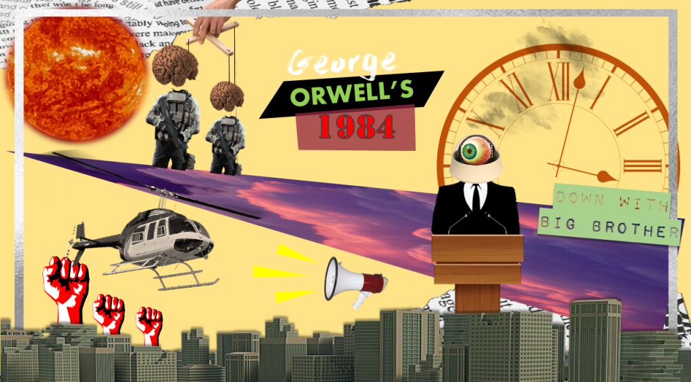

Down with Big Brother: 1984 in Present-Day Society
July 15, 2021 • Joan Gabrielle

Classic literature, being a time-tested form of artistic expression, does not only introduce the audience to a profound realm of emotions but also continues to communicate the message on how humans should live and behave. With that said, books categorized as literary classics are highly acclaimed for demonstrating such timeless nature, captivating the most fundamental and universal themes across many generations of readers. This account resonates well with George Orwell's dystopia 1984, one of the finest among literary classics. First published back in 1949, Orwell's classic centralizes on protagonist Winston Smith, a low-ranking member of the Party, and highlights the lives of the citizens in the totalitarian state of Oceania. It further narrates about the main character's quest to defy the oppressive regime of the Party's ever-omnipotent leader, Big Brother, through the means of deviating from the established rules and pursuing a forbidden affair with another Party member named Julia. While Orwell's 1984 is overall infused with horrific themes alongside having a dark and pessimistic tone, nevertheless the novel exhibits a lasting significance. The relevance of this novel is certain since the major and central ideas parallel to that of the happenings in the current society: the prevalence of technology as a destructive mechanism, the continuous susceptibility of individuals into believing alternative facts, and the on-going warfare in the modern times.
The novel's relevance is first witnessed through the display of how the prevailing technology acts as a destructive mechanism. In the novel, technology primarily comes in the form of a surveillance device called the ‘telescreen'. A telescreen constantly keeps an eye on the speeches and actions of the people in Oceania, while at the same time serves as a medium of communication for the deceptive propaganda of Big Brother and the Party. The perilousness of this technology is highlighted in the novel as the narrator discloses, “It was terribly dangerous to let your thoughts wander when you were in any public place or within range of a telescreen” (Orwell 68). This tells what privacy and individualism are like for the people in Oceania. The usage of the phrase ‘terribly dangerous' ignites the idea that an individual's own thoughts are suppressed for the reason that every movement and even the smallest volume of voices can be tracked by the technology of the telescreen. Through this technological device, the ruling power is able to control the people in a way that the information gathered by the telescreens can be used most especially against those individuals who have secretive, rebellious thoughts. This likewise relates to the ubiquity of technology in modern-day society. Nowadays, the technology of this ‘telescreen' can be compared to that of social media, surveillance cameras, and smartphones. Such devices also have the capacity to track individuals, thus, invasion of privacy takes place. Moreover, the information that circulates around and is presented in these devices can as well be controlled by those in power. Information, as it is created, can also be destroyed. In the novel, the technology called ‘memory holes' has this capability. Speaking of this technology, it is revealed that “For some reason they were nicknamed memory holes [because] when one knew that any document was due for destruction…it was an automatic action to lift the flap of the nearest memory hole” (Orwell 44). The term ‘memory hole' is metaphorical with the fact that information can be eradicated as if the message has never come into existence—leaving no trace of ‘memory' behind. In 1984, memory holes dispose any evidence that will uncover the alteration of history in Oceania and expose the manipulation of Big Brother and the Party. Today, erasure of information is necessary to fit one's own agenda, similar to that in the novel. Various technologies these days allow users to “delete” documents and any other files that could possibly expose secrets and will be used against individuals in the future. Orwell's depiction of the dangers of prevailing technology and the negative impact of technological advancements among individuals is still timely in the present day.
The continuous susceptibility of individuals into accepting alternative facts, or hoax, is another way in which the novel remains relevant to the modern world. Alternative facts, the fabrication of lies as truth, play a key role in how the totalitarian government of Oceania is able to psychologically manipulate the Party members in the novel. Readers have a first glimpse at the presence of the so-called ‘alternative facts' in the first few pages of the book as the official motto of the Party goes this way: “War is peace. Freedom is slavery. Ignorance is strength” (Orwell 11). The stark juxtaposition on these three consecutive statements indicates the obvious contradictions among the context of the words. It highlights the concept of doublethink—which is the method of indoctrination by the Party—wherein individuals simultaneously hold two contradictory thoughts at the same time. The idea of holding two or more contrary beliefs together is still evident at the present time. Such contradictions coexist, most especially, during the times wherein individuals feel the need to conform into societal standards while also wanting to pursue personal desires and this makes it difficult to discern fact from falsehood. Working in the Ministry of Truth, the main task of Winston is to alter, rewrite, and revise factual history and records from the past to such a degree that the information these documents contain aligns with the Party's propaganda. As the narrator unveils, “The past was erased, the erasure was forgotten, the lie became truth,” the blurred lines between fact and fabrication comes into the surface (Orwell 81). The usage of verbs in past tense (such as ‘erased', ‘forgotten', and ‘became') outlines how those in authority are powerful enough to alter the truth through the means of removing all traces of memories from the past and modifying history in order to make their present actions justifiable—hence, fabricating lies to appear as truth. This akins to the dissemination of hoaxical information typically under the oxymoronic phrase called “fake news” in the present-day world. Since the understanding of the past determines an individual's attitude in the present and influences the vision for the future, thus, erasing or changing the past is an effective method to discourage people from verifying and challenging present claims. Orwell's representation how twisted truths serve as a major factor in psychological manipulation among the individual subjects in the novel remains timely and relevant these days.
Along with destructive technology and alternative facts, Orwell's incorporation of warfare in the novel fimly proves that this literary treasure withstands the test of time. The representation of warfare in the book is that the battle never ceases to exist although the enemy can change in a sudden manner—either Oceania versus Eastasia or Oceania versus Eurasia. Emmanuel Goldstein, the prominent rebellious figure according to the Party, and his book captures Winton's interest. The main character reads, “The war, if we judge it by the standards of previous wars, is merely an imposture.” (Orwell 203). The context behind this statement establishes the idea of how warfare is just a means to deceive the populace. Like in the novel wherein the citizens of Oceania suddenly shift hatred towards another enemy when it was announced that the nation had never been at war against the present enemy, it highlights how people easily believe what the authority says. Up to this day, never-ending warfare continues to occur no matter who or what the enemy is. Speaking of war, it does not only exist between two nations or any physical bodies externally but it can also occur internally from within the individual. In fact the ‘worst enemy', as Winston reflects, “was your own nervous system” (Orwell 70). The nervous system has the greatest capability of control because even the most subconscious thoughts that the mind contains can stimulate visible involuntary gestures in the body. For example, in Oceania, a single twitching of the face alerts the oppressive government whether an individual is thinking of rebellion or is daring to oppose the Party's propaganda. This concept remains topical to those who experience this kind of internal conflict. The present-day society tends to judge individuals based on their actions because there exists a certain mindset that the actions reflect motives. The author's integration of ceaseless internal and external conflicts undeniably manifests the timeless nature of the novel.
Destructive technology, alternative facts, and endless war—these are the three elements acting as the threads that the author masterly wove into creating the novel's ageless fabric. Orwell's overall portrayal of how the prevailing technology can serve as a destructive mechanism, the altering of facts is an effective technique for psychological manipulation, and the never-ending war that exists outside or within undoubtedly captures the timeless nature of the novel as it relates to the modern-day happenings in the society. With all said, the timeless nature of a literary classic like Orwell's 1984 still paves the way into shaping how and why writers write and readers read the way they do today. Literature, as it is, with the sempiternal essence that classic novels continue to embody will truly encourage empathy among various generations of readers and across different time periods.
Works Cited
- Orwell, George. 1984. Arcturus Publishing Ltd.